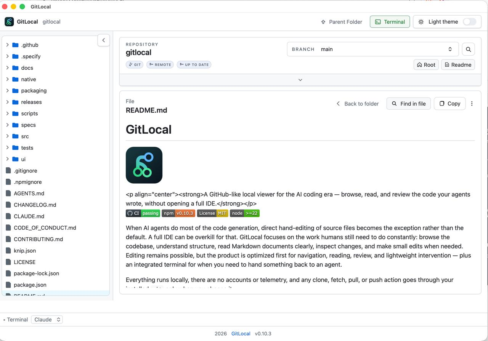

Browse like GitHub
A lazy-loading, keyboard-navigable file tree for regular folders and git repositories, right on your machine.
GITLOCAL
A local, GitHub-style viewer for the code your AI agent wrote. Browse the repo, read Markdown clearly, review what changed, and hand off to a terminal — without opening a full IDE.
npx gitlocal

A lazy-loading, keyboard-navigable file tree for regular folders and git repositories, right on your machine.
GitHub-like rendering with relative links, heading anchors, find highlights, and share/copy actions. No IDE required.
A changed-files panel for modified, deleted, untracked, generated, and local-only paths, plus active-file refresh notices.
Repository-wide search with current-folder and Markdown-focused scopes, plus file-level find inside the current file.
A plain-language repository summary — branch, remote, sync, and local changes — backed by technical detail when you need it.
A built-in terminal docked at the bottom of the window, wired for Claude, Codex, or a plain shell, with cross-page session persistence.
Choose the npm package for any OS, or the native macOS app if you'd rather skip the terminal.
npm install -g gitlocal
gitlocal .
Opens in your default browser. Keep the terminal window open while you use it.
brew tap ehud-am/gitlocal
brew install --cask gitlocal
No terminal needed after install. Currently unsigned, so macOS shows a security warning on first launch.
Full setup and troubleshooting notes are in the README.